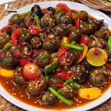

deskripsi
TUTUT
Tutut adalah hidangan berupa keong atau kerang sawah kecil dengan bumbu Pedas yang segar dan gurih. Kelezatan tutut terletak pada cara penyajiannya, di rebus dan disajikan dengan nasi hangat.

kembali